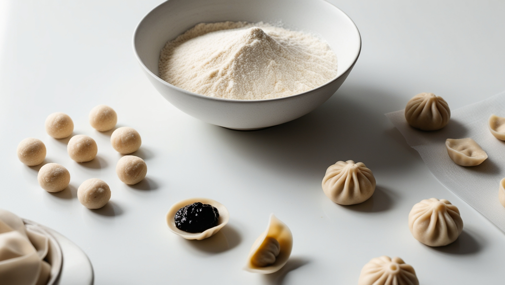

Step 1
In a bowl, mix the glutinous rice flour with the hot water until a smooth and manageable dough forms. Knead for about 5-8 minutes. Divide the dough into small portions the size of a marble. Flatten each portion and place a bit of filling in the center. Wrap the filling with the dough, seal well, and roll gently between your palms to form smooth balls.
